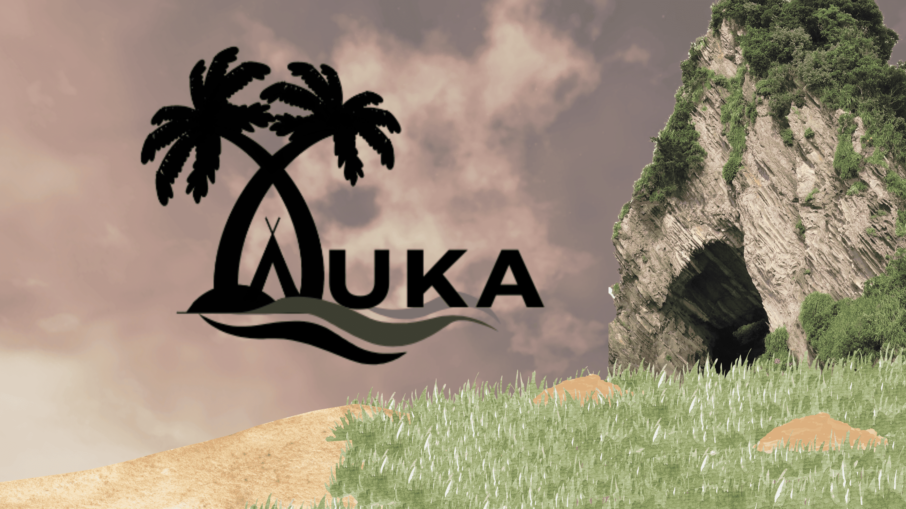
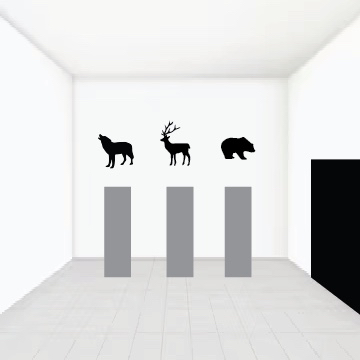
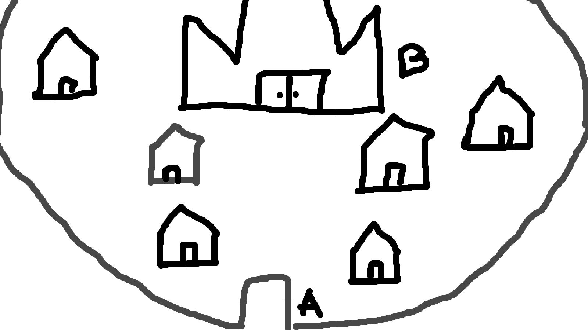
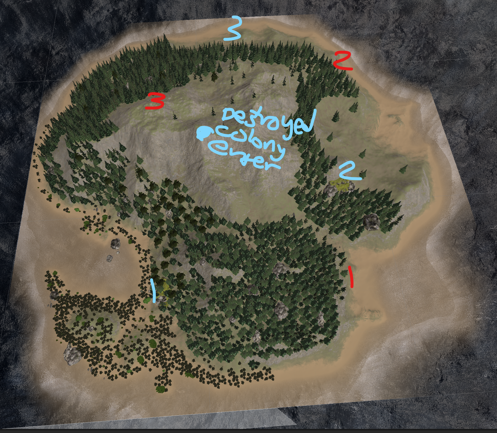
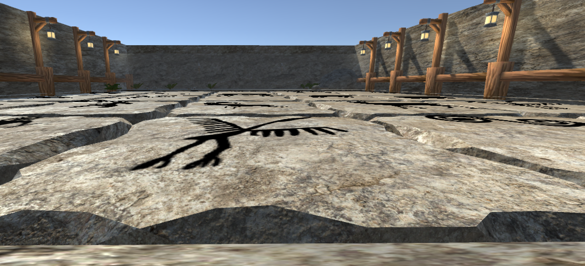
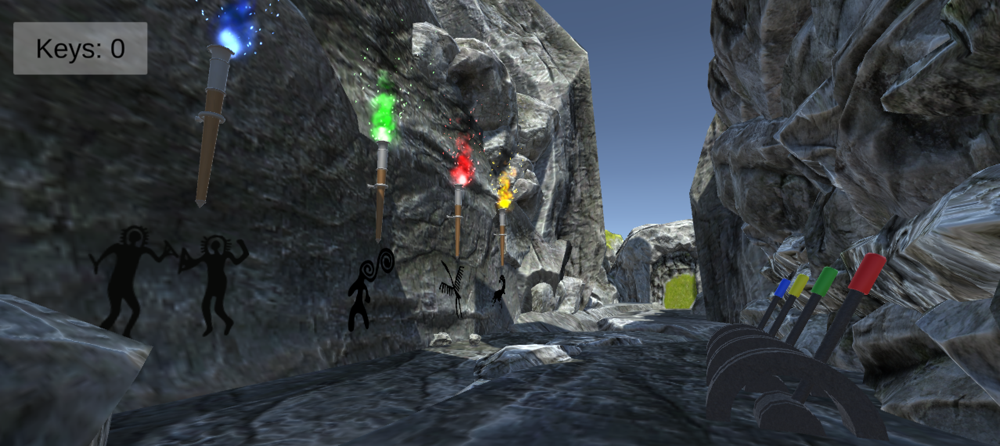

The project journal/ 02
Fun & Insightful Projects I Made.
AUKA.
An unfamiliar island. A puzzle waiting around every corner.

01 / The story
About the
project.
AUKA was a final group project for my CS game design class. What made it especially rewarding was seeing our ideas come to life as a playable game.
My role: Producer
As Producer, I oversaw the group and helped keep the team focused on building and completing the project.
The challenge: moving from 2D to 3D
Our biggest challenge was transitioning from 2D to 3D game design. Camera work was difficult at first. Once we had a clearer vision of the world, we organized the camera to reveal information to the player while letting the landscape itself become part of the puzzle.
What I learned
This project was a lot of fun and taught me new skills in 3D game development and working with a team. Seeing our shared ideas take shape was one of its most rewarding parts.
Skills
- Unity
- C#
- Leadership
- GitHub
- My role
- Producer
- Availability
- Windows · itch.io
- In the journal
- 02 / 03
02 / From idea to world
The design process.
Sketches, prototypes,
and world planning.






Early design materials show the planning process and may differ from the finished game. Select an image to view it full-size.
03 / A closer look
Scenes from the project.
Screenshots from the
official itch.io page.




Screenshots from AUKA on itch.io. Select an image to view it full-size.
04 / Continue the journey
Step onto the island.
Visit the official itch.io page for the Windows game and download details.
Hosted on the project’s itch.io page.
Next project
TopFest